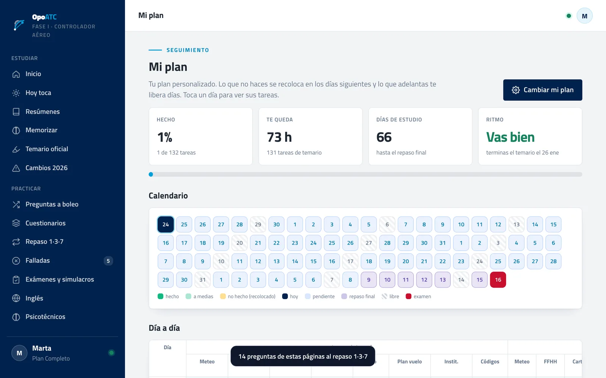
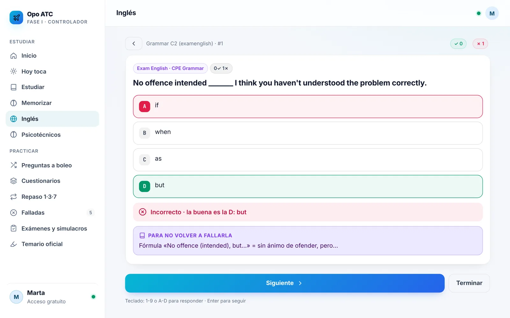
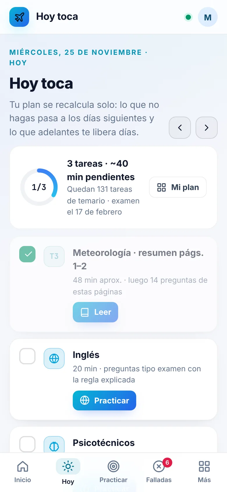

Teoría
8 €/mes
- Los 9 temas: resúmenes, fichas y temario oficial
- 759 preguntas de cuestionario + 10 exámenes
- Plan diario personalizado y adaptativo
- Repaso 1·3·7, falladas y simulacros −0,33
Cada mañana sabes exactamente qué toca: qué páginas leer, qué preguntas hacer y qué repasar. Si un día no llegas, el plan se recoloca solo.


La Fase I se prepara durante semanas o meses, casi siempre a la vez que trabajas o estudias. Sin un plan, se repasa lo cómodo, se acumulan las falladas y el examen llega antes de terminar el temario.
OpoATC convierte el temario en un calendario realista según el tiempo que tienes, te pregunta lo que acabas de estudiar al día siguiente, a los 3 y a los 7 días, y te avisa si vas con retraso antes de que sea tarde.
Fecha del examen (o cuántas semanas tienes), horas de lunes a viernes y fines de semana, días libres y desde dónde partes.
Páginas del resumen y, justo después, las preguntas de esas páginas. Con días de repaso final antes del examen.
Marcas lo hecho. Lo que no hagas pasa a los días siguientes y lo que adelantes te libera días.
Repaso a 1, 3 y 7 días, falladas que vuelven hasta que las aciertas dos veces y simulacros con −0,33.

759 preguntas de cuestionario organizadas por tema y en bloques de 20, y 513 preguntas de 10 exámenes de convocatorias anteriores. Desde cada pregunta de cuestionario saltas a la página del resumen donde está la respuesta.

Más de 950 preguntas de gramática y vocabulario, y exámenes de inglés de convocatorias desde 2017. Cuando fallas, ves la regla que necesitas para no volver a fallarla.

Series numéricas y de letras, cálculo rápido de velocidad, tiempo y distancia, atención con datos de vuelo y memoria de tráfico. Se generan al momento: nunca repites el mismo ejercicio.


Tu progreso se sincroniza: empiezas en el portátil y sigues en el autobús.
Una vez cargado, puedes seguir estudiando aunque te quedes sin cobertura.
Porcentaje hecho y de acierto por tema, racha y qué temas caen más.
¿Cambia la fecha o tu horario? Respondes de nuevo y se recalcula.
Exclusivo para preparar la Fase I. Suscripción mensual, sin permanencia: cancela cuando quieras desde tu cuenta.
No pagues hoy por fases que todavía no te tocan. Cuando superes la Fase I, cambias de plan.
No. OpoATC es un servicio independiente de preparación y no tiene relación con ENAIRE. Usamos su temario oficial público y exámenes de convocatorias anteriores para que practiques con el formato real.
Los planes actuales son exclusivamente para la Fase I. La Fase II y la Fase III tendrán su propio plan, para que pagues solo por la fase que estás preparando.
Desde Ajustes → Gestionar o cancelar suscripción. Sigues teniendo acceso hasta el final del periodo que ya has pagado y no se te vuelve a cobrar.
Sí, cuando quieras. Si pasas de Teoría a un plan con inglés o psicotécnicos, el cambio se prorratea en tu siguiente factura.
Eliges cuántas semanas quieres prepararte y el plan se crea igualmente. Cuando se publique la fecha, la cambias y todo se recalcula.
Los simulacros restan 0,33 por respuesta incorrecta, como en el formato de examen de la Fase I. Puedes ajustar la penalización y el tiempo en Ajustes.
En cualquier navegador de móvil, tablet u ordenador. Puedes añadirla a la pantalla de inicio del móvil como una app y tu progreso se sincroniza entre dispositivos.
Crea tu cuenta, elige tu plan y en dos minutos sabrás qué estudiar cada día hasta el examen.
Elegir mi plan